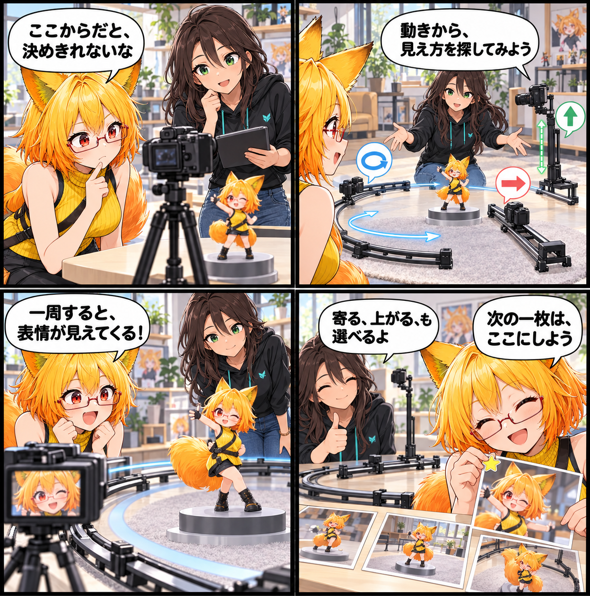

2026.10.29 / Development Log / Feature Spotlight
閑話休題：カメラに、ゆっくり回ってもらう
新規実装の報告ではなく、VRASにある既存のカメラパス生成を紹介する回です。Orbit、Dolly、Craneという視点の動きから、アバターの見せ方を探します。
今回は feature-spotlight（機能紹介） です。集計期間は2026-10-28 03:00:00 JSTから2026-10-29 02:59:59 JSTまで、対象はViewerの
main です。集計終了時点のHEADは 56b3a0827ee7a5acdc37fc72864ff964d4c60792、期間内コミットは0件でした。未コミット差分は、期間内の実装事実として確認できないため実績には含めていません。
視点を、ひとつの場所に止めない
アバターを撮るとき、カメラを一度決めただけでは、横顔の表情や衣装の立体感が見えにくいことがあります。VRASのカメラパス生成では、被写体のまわりを巡る Orbit、前後へ寄る Dolly、高さを変える Crane という既存の動きを選べます。まず動きの型を選んでから、撮りたい一瞬を探せるのがポイントです。
同じアバターでも、見えるものが変わる
Orbitでは輪郭や背面までゆっくり見比べやすく、Dollyでは顔や小物へ視線を近づけられます。Craneでは目線の高さを変えながら全身のバランスを確かめられます。どれかひとつが正解というより、見せたい場所に合わせて視点の動きを選ぶための道具です。
4コマの話
静止画の前で構図を迷っていたろひが、ルミナと床に描かれた軌道線をたどります。視点を巡らせると、同じアバターにも別の表情があることに気づき、最後は「ここだ」と思える一瞬を選びます。新しい機能を作った日ではなく、すでにある撮影の選択肢をゆっくり眺める回です。
まとめ
カメラパスのOrbit／Dolly／Craneは、構図を固定してから悩む代わりに、視点の動きから見え方を探すための既存機能です。アバターを一周して、寄って、少し高い場所から見てみる。その小さな往復が、残したい一枚を見つける助けになります。